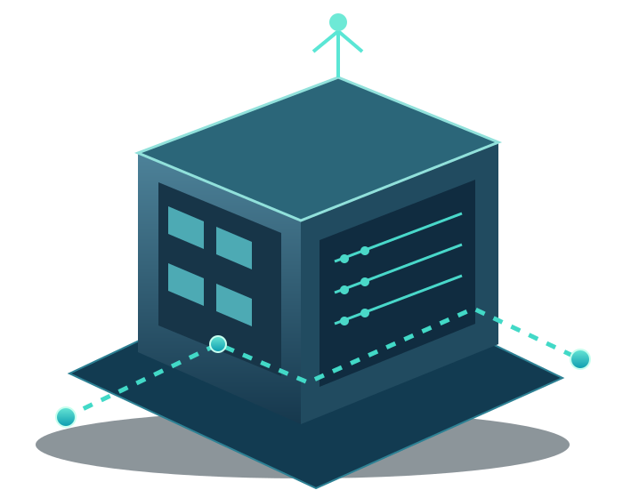

Property Owners & Brokers
Identify buildings that may benefit from adaptive reuse and evaluate potential transaction structures.
We engage property owners, developers, investors, and network providers to evaluate opportunities where existing assets can support new infrastructure uses.

Different partners bring different strengths to the development process.
Identify buildings that may benefit from adaptive reuse and evaluate potential transaction structures.
Assess opportunities, development requirements, investment considerations and long-term operating models.
Explore infrastructure availability, service feasibility and connectivity requirements for prospective facilities.
Not every building is suitable. Power availability, utility commitments, physical characteristics, fiber connectivity, permitting, development economics and market demand must be evaluated before a project can advance.
OrionNet365's available Net-Bridge Services offering connects the development opportunity with ongoing facility and network management. For real estate and infrastructure partners, the goal is an accountable operator focused on customer service, asset utilization and regional growth—not a one-time construction handoff.
Learn about Net-Bridge Services ↗Tell us what you’re evaluating and we can explore whether there is a fit.